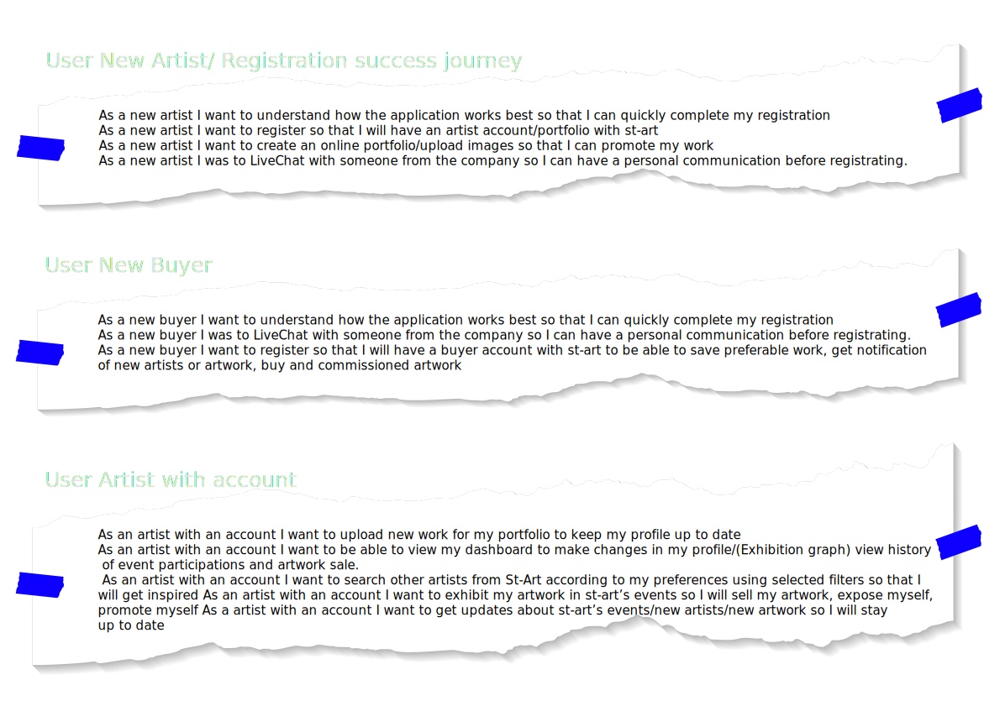
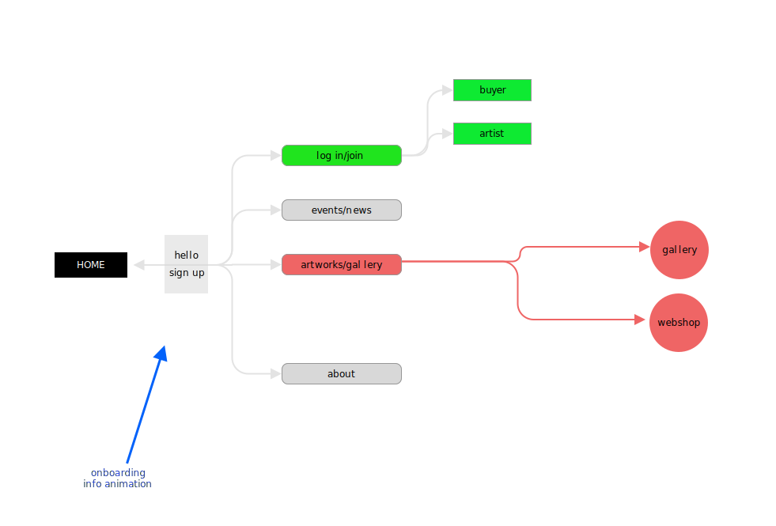
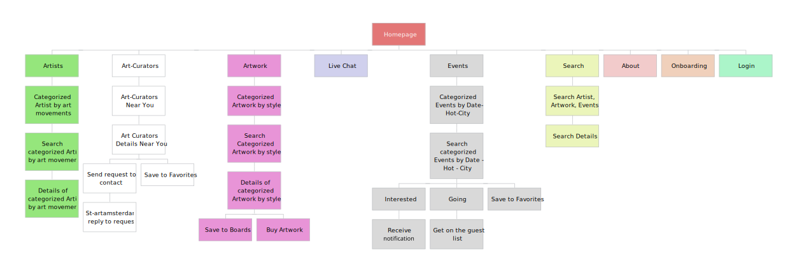
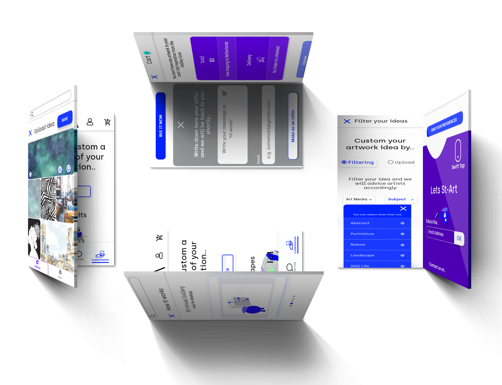
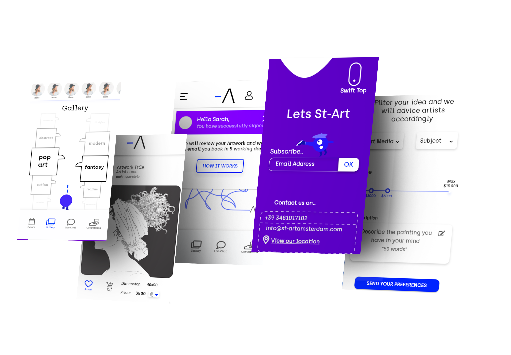
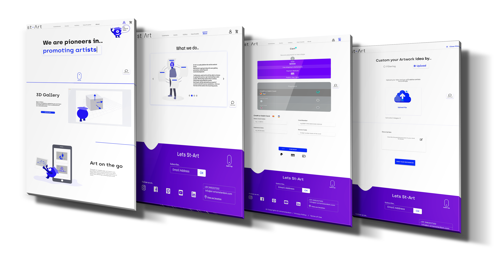
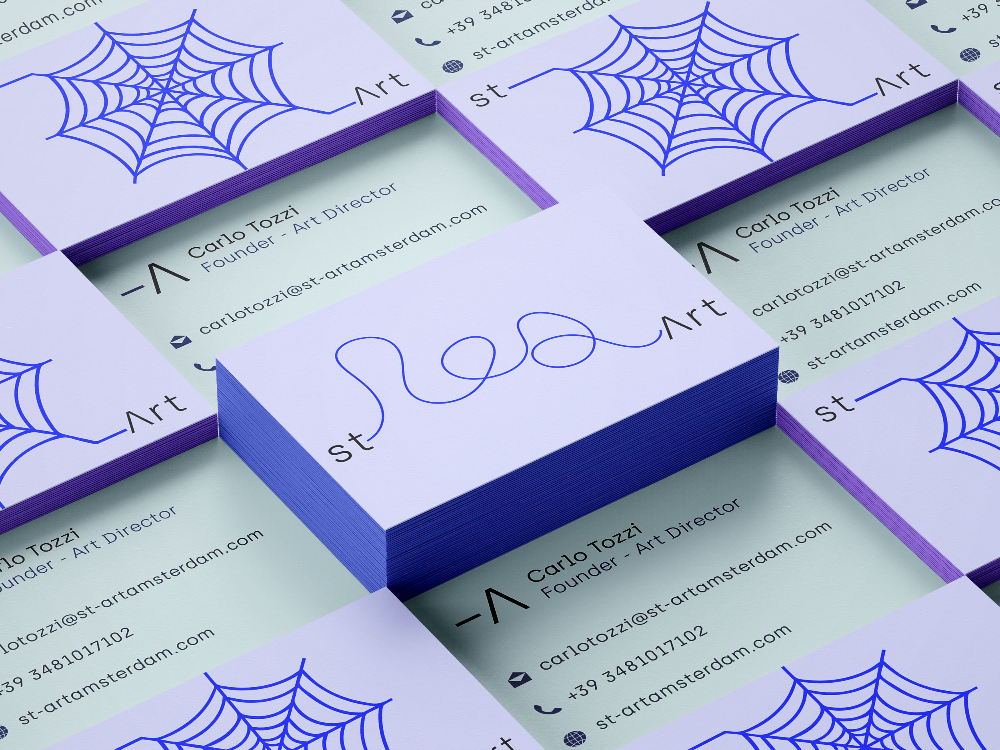

UX-UI / St-Art project
St-Art your journey into Art
Nowadays the amount of talented artists worldwide is developing exponentially.There are a few apps available in the marketplace but neither seems to mentor individually artists and exhibit their artworks worldwide.
This start up company launches a digital platform where users can find filter searching, guidance and virtual artwork exhibition from multiverse worldwide artists.
My role for this project, was -together with another UX Designer- to structure the design of a user center web responsive application and deliver high quality interfaces and assets to the developer.
Challenges we try to solve with this web app
- Artists face difficulties to reach key people, like buyers, curators, collectors and promoters
- Many artists feel lost and give up due to a lack of confidence, networking and funds
- The majority of young artists don’t know how to professionally represent their artwork portfolio online
- Art lovers find difficulties to find the artwork style which fulfill their expectations
- There is absense of artistry in Outfits.(Industrial places, Business meetings-offices, Restaurants, Hotels etc.)
St-Art Strategy
This is a platform that allows both Artists & Art Lovers to:
- Create their free online profile or portfolio
- Exhibit or explore virtually artworks with the 3D Visual exhibition feature (Only for Desktop devices)
- Live Chat daily with our art experts and market advisors
- Participate or join Art events globally
- Get weekly updates with new artworks, art events and news
- Commission a tailored artwork that matches with your taste
Competitor Analysis
We started out with a competitor analysis to determine the strengths and weaknesses of the competitors within the market. Is essential to look at the market from the customer's viewpoint and group all the competitors. Once the competitors have been grouped, I started to analyze their strategies and identified the areas where they are most vulnerable.
The three main competitors for this project were Singulart, Artland, and Affortable Art Fair.
The SWOT analysis was the useful technique we have used to understand the competitors's Strengths and Weaknesses and to identify both the opportunities and potential threats for my product.
A sample of User Stories
We have created all User Stories in order to contain enough information so that developers can produce a reasonable estimate to implement it
Sitemap
At this stage, we have created a Sitemap to understand with the Agile team how users will navigate intuitive through the pages.
Improved Sitemap
During the weekly sprints with the team, more features of the app added and the revised Sitemap is as follows:
Low Fidelity Wireframes
The low fidelity wireframes are typically a paper sketches of the project user flow, helped me to quickly and zero costly design some user navigation screens. I have used a first Mobile approach for both mobile and desktop devices.
St-Art Assets & UI Library
"Reusable components for consistent UI applications"
The St-Art library components consists from:
- Material Design Guidelines
- 12 column grid system for responsive interfaces
- UI components like buttons, Icons, Calendar design, Input Field Forms
- The Ink Tank color pallete with Primary and Secondary colors
- Guideline of sizes fro both desktop and mobile devices
- The Hierarchy of the Typography as well as the Font style and weight

St-Art responsive UI
First mobile approach
- A mobile responsive framework, it considers mobile users’ needs first and foremost
- With this strategy we can assure that all the elements are placed clearly and with concise
- This approach help designers to keep simplicity that reduces anxiety and improves clarity to users
- Screen sizes are always changing, so it's important that this webapp can adapt to any screen size, today or in the future.
Responsive desktop User Interfaces
To attempt to provide the best and responsive experience, we have designed every single screen for the smallest mobile size at 360px wide, and from one page for each feature of the product for the largest screen at 1920px width. Together with both mobile and desktop screens have delivered the prototypes, so that the developer and the team members could have a clear understanding of the product's navigation.
Do you like to view the ST-Art Prototype?
View PrototypeDesign deliverables for St-Art Marketing Campaign
I have joined St-Art from the initial steps when we were still concepting the project brief. The core team was pretty much in place, with directors of business development,one UX designer and marketing already on board. However, having background in Graphic design,simioutaniously with the UX design webapp development, I was able to be responsible for the design deliverables for St-Art's marketing campaign. After we have fortified the domain name we started to design our logo. My role was to identify the Brand style, colors and to follow the Arial Typography Font. The Brand name is a play of words and consists of the letters St-Art and the "Vertical bar" that divides the Art from Start. The vertical bar has no start and end as it is continuously developing and creating different shapes depending on the circumstances.
For the marketing campaign we have delivered the following design deliverables:
- The Brochure Subscription that launch Affortable Art for Sale, Rent, Lease in Business places.
- Posters, Banners and social media designs for collaboration events with Bars, Hubs, Restaurants and Clubs
- Brand identity design deliverables in high quality resolution for printing.
Sample of Poster events
- Art Event in Radion Club in Amsterdam
- St-Art inspired from the Multiverse movie of Spiderman, launches an art event with a multiverse of Artists with different techniques
- Multiverse of Art, Music and Food
- The design idea for the collaboration poster, is a combination of a spider net that have created from St-Art's verical bar and in the middle is established Radion logo
To sum up, all the style and layout of the design deliverables have followed with the consistency of our web app, brand color palette, and the Hierarchy of Typography and icons.